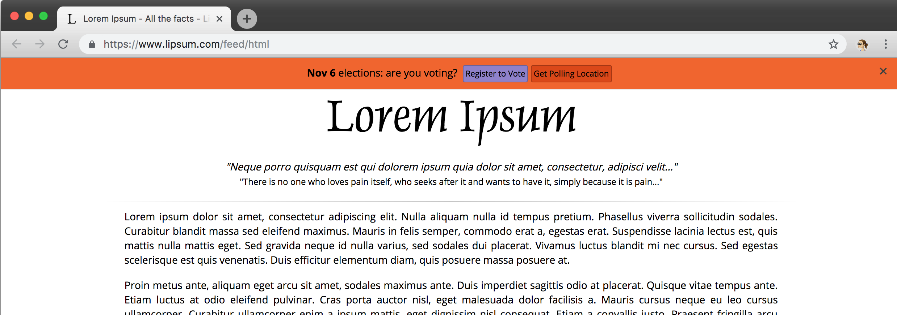

U.S. midterm elections are coming up on November 6. This year they're especially important. You can advocate for democracy by encouraging your users to vote.
This simple code snippet will add a voter registration call-to-action to any page.
Include this line of HTML on your site:
The banner is only shown to U.S. users up to election day. As election day approaches, the "Register to Vote" option will be replaced by the "Get Polling Location" button.

To quickly preview how it looks on your page, you may paste this into your console:
You can set the following attributes under window.voteBannerConfig:
Here is the default settings object. You can change or remove any of these attributes to customize the appearance of the banner:
window.voteBannerConfig = {
backgroundColor: '#ff7a2b',
fontColor: '#000',
defaultButtonFontColor: '#fff',
defaultButtonBackgroundColor: '#8f7fcc',
defaultButtonBackgroundColorHover: '#5c3fcc',
mainButtonFontColor: '#fff',
mainButtonBackgroundColor: '#585fff',
mainButtonBackgroundColorHover: '#5c3fcc',
text: '<strong>Nov 6</strong> elections: are you voting?',
};Be sure to set window.voteBannerConfig before including the <script> tag.
This snippet is compatible with IE 9+, Firefox 3.5+, Safari 3.1+ (Mobile Safari 3.2+), Opera 10.5+, and Chrome.
This library is open source on Github here.